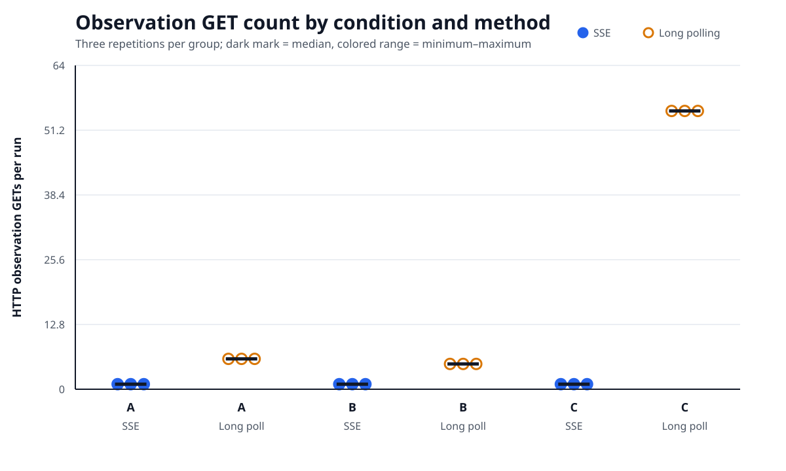
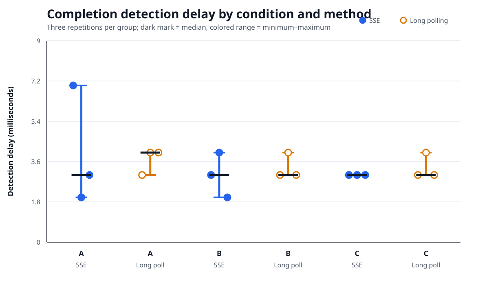

Implementation, controlled comparison with long polling, and evidence from 18 measured runs
202 Accepted and a durable jobThe worker commits a new client-visible version in the same database transaction as the state or progress change.
2After commit, the worker broadcasts a wake-up hint through the in-process observation hub.
3Every subscribed SSE handler wakes and reads the latest complete snapshot from PostgreSQL.
4The handler sends a newer version, flushes the frame, and keeps the response open unless the job is terminal.
The notification carries no authoritative job data. PostgreSQL remains the source of truth.
GET /v1/jobs/{id}/events
Content-Type: text/event-stream; charset=utf-8
Cache-Control: no-cache
X-Accel-Buffering: no
event: job-update
data: {"id":"…","status":"processing","version":3,
"stage":"thumbnail_ready","variants_completed":1,…}
id field is sent. Snapshot versions do not promise event-history replay.EventSource for the accepted job.job-update and pass it to the shared renderer.close().Stop observing closes the browser stream only. The worker keeps running.
Resume observation opens a new stream for the same job. Its initial event recovers current state.
| Condition | Workload | Prediction |
|---|---|---|
| A: quiet | 30 seconds without visible progress | SSE stays at one GET; long polling crosses its 20-second deadline |
| B: real | Three real variant commits | Similar delay; long polling opens a GET after each snapshot |
| C: frequent | 10 seconds at 200 ms, then real work | SSE request count stays flat; long-poll count follows observed versions |
Same PNG and transformations, one observer, one worker, empty queue, three repetitions, alternating method order.

SSE used 1 GET in every run. Long polling used 6, 5, and 55 GETs in conditions A, B, and C.

All medians were 3–4 ms. The 2–7 ms observed range does not establish a latency advantage.
| Condition | SSE work | Long-poll work |
|---|---|---|
| A | 30.2–30.4 s held stream, 2 heartbeats, 5 DB reads | 6 GETs, 11 DB reads |
| B | 0.2 s held stream, 5 events, 5 DB reads | 5 GETs, 9 DB reads |
| C | 10.2 s held stream, 55 events, 55 DB reads | 55 GETs, 109 DB reads |
The experiment did not measure TCP connections, production memory limits, or multi-server capacity.
Use SSE as the default observer for this single-process ImageLab deployment. Keep long polling as a compatible fallback and short polling as a baseline.
One local machine, one observer, three repetitions, no network throttling, and no multi-server fan-out.